Here is the Durbar Special that I've been working on for a while now. The purpose is to explain what the Delhi Durbar from 1903 was, for all of you who haven't read about it, and to show all of you who do all the information and photographs that I could get. I also featured a web page for each of the elephants that we've made so far, showing the images that we used to make them and what led us to choose them. You can enter each page from the link in the image of each elephant. It was a huge pleasure for me to write this for all of you. I'm such a passionate for the Durbar and I apologize if this is a bit too much information for the ones that are really not interested. I know that our Durbar collectors will definitely love this. Enjoy it. I featured this for you.
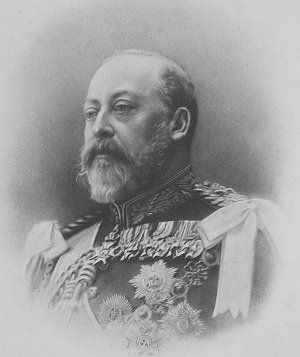
King Edward the VII
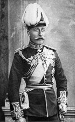
The Duke of Connaught
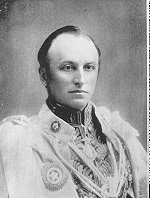
Lord Curzon
On New year's day 1903, Edward the VII was declared Emperor of India. The occasion was marked by a grand ceremony held at the Delhi Durbar, a spectacular and elaborate festival organized by the British government. Lord Curzon was determined that it should be "the biggest thing ever seen in India" and spent almost two years in meticulous planning to ensure that this was so. The planning and organization of the durbar was spearheaded by Sir James Robert (JR) Dunlop Smith. The site selected was the same upon which the 1877 Durbar had been staged.
Edward VII, to Curzon's disappointment, did not attend but sent his brother, the Duke of Connaught who arrived with a mass of dignitaries by train from Bombay just as Curzon and his government came in the other direction from Calcutta.
The two full weeks of festivities were devised in meticulous detail by Lord Curzon. It was a dazzling display of pomp, power and split second timing. Neither the earlier Delhi Durbar of 1877, nor the later Durbar held there in 1911, could match the pageantry of Lord Curzon's 1903 festivities.
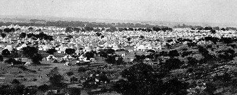
The Durbar camps, outside Delhi
In a few short months at the end of 1902, a deserted plain was transformed into an elaborate tented city, complete with temporary light railway to bring crowds of spectators out from Delhi, a post office with its own stamp, telephone and telegraphic facilities, a variety of stores, a Police force with specially designed uniform, hospital, magistrate's court and complex sanitation, drainage and electric light installations. Souvenir guide books were sold and maps of the camping ground distributed. Marketing opportunities were craftily exploited. Special medals were struck, firework displays, exhibitions and glamorous dances held.
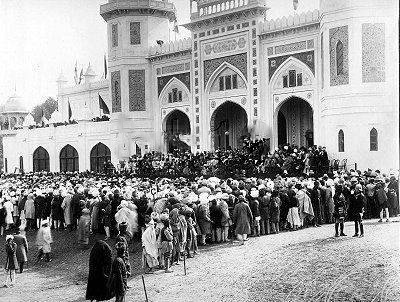
Opening of the Indian Art Exhibition
The Official programme of the events, crowded into the space of twelve days is briefly as follows:
- The State Entry of His Excellency the Viceroy
- The Elephant Procession
- The Opening of the Indian Art Exhibition
- The Durbar Proceedings
- The State Church Service
- Review of Troops and the departure of His Excellency the Viceroy
Other functions and amusements: Polo tournaments; Foot Ball; Cricket; Assaults-at-Arms; Review of the Native Chiefs' Retinues, and fireworks and Illuminations.
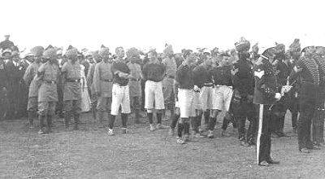
Winner Polo Team
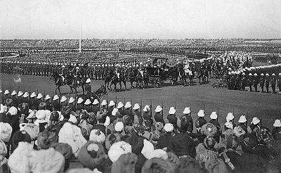
The Review of the Troops
The imperial durbar ceremony itself fell on New Year's day and was followed
by days of polo and other sports, dinners, balls, military reviews, bands,
and exhibitions. The world's press dispatched their best journalists,
artists and photographers to cover the proceedings.
The programme of events ran over 10 days. It began with the grand opening
procession on 29th December, where the Viceroy, the Duke and Duchess of
Connaught, other British VIPs and Indian Princes paraded through the streets
of Delhi on elephants.
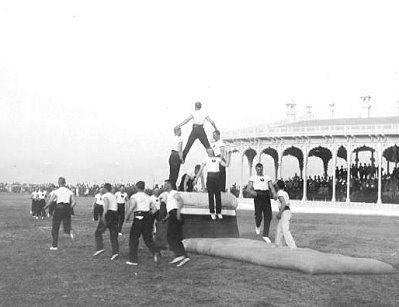
Gymnastic exhibition
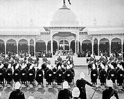
The Imperial Durbar, on January 1st
The Main Procession
The proceedings opened on December 29, 1902, and the viceroy and his royal guests were received at the train station within the city, and then conducted a parade of elephants through the city streets and then out through a gate. The guests included royals from almost all of the princely states of India, including Maharajahs, Rajahs, Nawabs, and other minor chiefs.
The State Entry and the Elephant Procession was perhaps in itself the most striking and to the Western mind the most impressive spectacle. The flower of Indian Nobility mounted on magnificent elephants resplendent in cloth of gold, with rich saddle cloths laden with priceless embroidery almost sweeping the ground on their side.
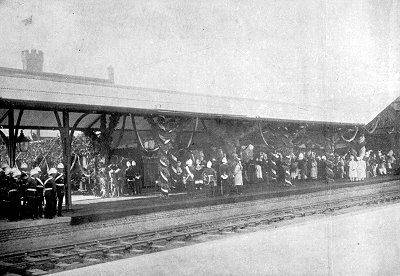
Station Platform
Here and there a trunk waved a fan or curved upwards as if saluting. Howdahs of every pattern were to be seen, high and low, long and short, silvered over or bedizened with gold, balanced on the broad backs, draped in yellow and red, purple and blue and green. Long silver chains depended on either side of the massive heads and made a musical jingle at every step. Men with maces marched alongside in some instances, and attendants held bright-coloured umbrellas over the heads of the Chiefs, who sat in every attitude in their howdahs.
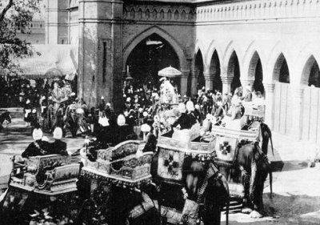
Lord and Lady Curzon at the Station,
on their elephant
Fifty elephants were invited to participate in the Main Procession. But they were Fourty Eight indeed. The Gaekwar of Baroda could not attend until a couple of days later because of the death of the Maharani, the wife of the later Gaekwar. The elephant of Cutch had to be separated from the rest close to the beginning, because the elephant went mad and didn't follow any orders. Finally, the Maharaja of Udaipur arrived 2 days later because of the illness of his son.
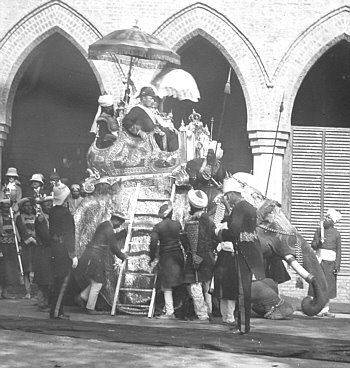
Lord Curzon's elephant
All the Retinue elephants, from all the states (166 in total) stood side by side along the side of Elgin Road, in front of the Red Fort, and saluted the Main Procession as the elephants passed. When the head elephants (6 with aides-de camps, 1 for Lord and Lady Curzon and 1 for the Duke and Duchess of Connaught) and the 48 Maharajas turned into Khas Road, the Retinues elephants prepared to follow them in their way through Delhi.
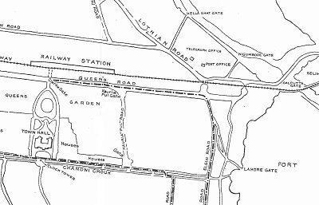
As the head of the elephant procession passed, there came slowly and in duly regulated order the highest nobility of India, in all the glory and pomp that our imaginations have ever pictured. His Highness the Nizam and the Maharaja of Mysore led, the Maharajas of Travancore, and Kashmir coming next, and we were soon deep in admiration at the display of the gold and silver howdahs, sumptuous clothes, richly embroidered, the sheen of jewels, the bright colours of turbans and apparel and the kaleidoscopic effects that were revealed as the procession skirted the Jama Musjid.
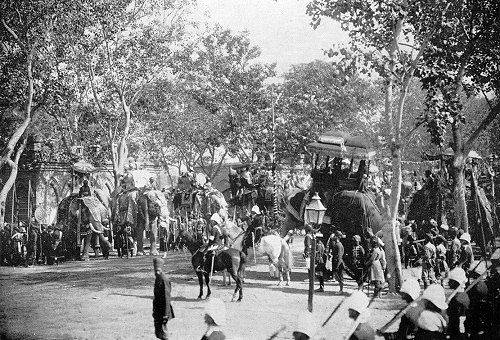
The Maharajas elephants at Queen's Road, outside the train station, waiting for the Main Procession to begin.
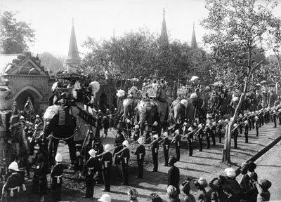
The Main Procession walking along Queen's Road
The Durbar itself was held on January 1, 1903, in a large amphitheater on the plain beyond the Ridge at Delhi, the site of the Imperial Assemblage of 1877. The 1903 Durbar was one of the finest spectacles India had ever seen during the Colonial rule, the parade of the Native Retainers at the Coronation Durbar. Dunlop Smith turned what many Englishmen expected to be shambles into a magnificent spectacle. The Native Princesses were delighted that he had shown their pageantry to such good effect.
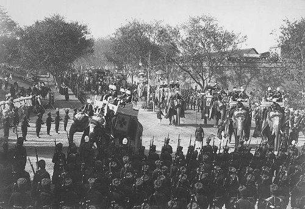
The Procession turning the corner at Queen's Road towards Elgin Road
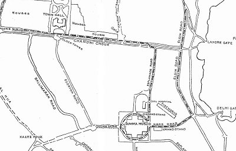
The Durbar included sports, music and competitions, and a review of 34,000 troops. An investiture, a state ball, the biggest display of Indian arts and crafts ever assembled and a very popular review of a delegation of retainers from some of the states were further highlights of the event. The event was entitled the 'Native chief's retainers review' and attracted considerable press interest in both India and Britain.
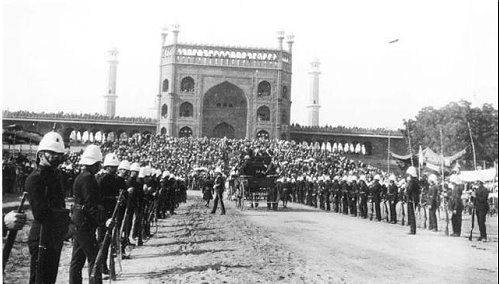
Khas Road, the path that the elephants took to cross the Champ de Mars, the space between the Red Fort and the Jumma Masjid
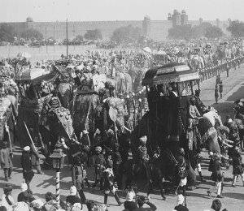
The Main Procession beginning their turn around the Jumma Masjid.
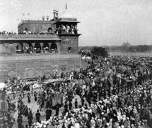
The first turn of the Procession.
The Red Fort at the distance
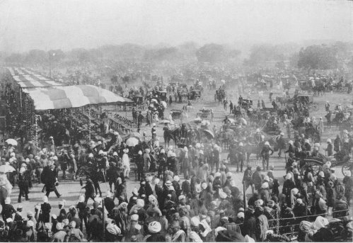
The Champs de Mars, crowded
in the Main Procession morning
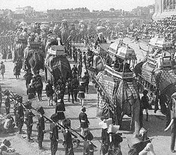
The Procession from the back, at the first corner of the Jumma Masjid
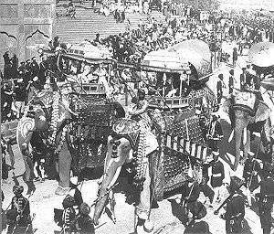
The last 4 elephants of the Main Procession: Janjira, Manipur, Keng Tung and Möng Nai (the Shan states)
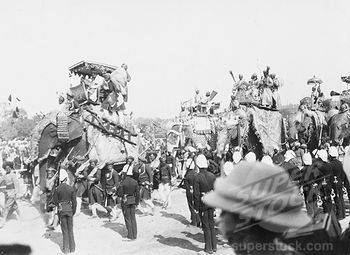
One of the spectators point of view, in Khas Road
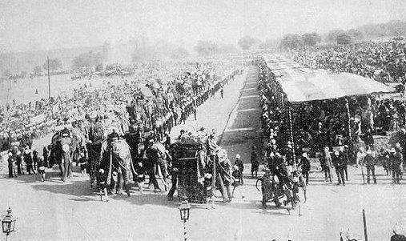
The head of the Retinues Procession, in front of the Jumma Masjid
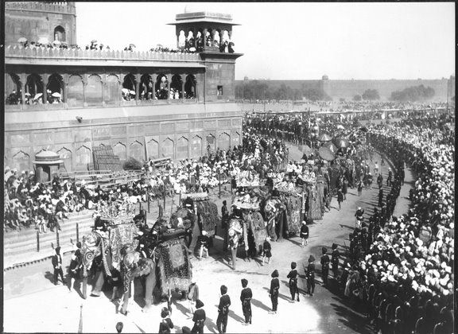
The Retainers at the first turn
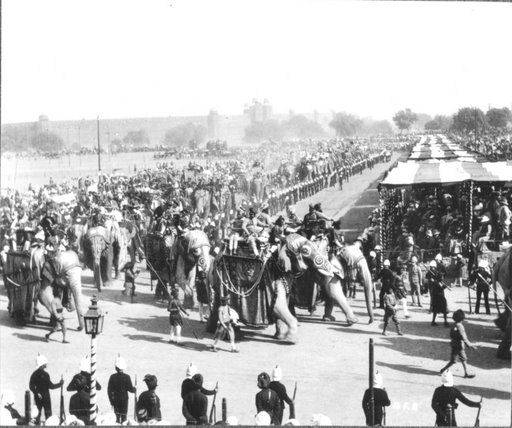
More Retainers by the Jumma Masjid
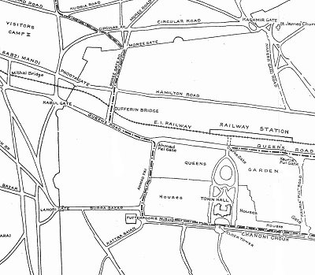
After the route around the Jumma, the elephants went towards Delhi's main street, the famous Chadni Chawk.
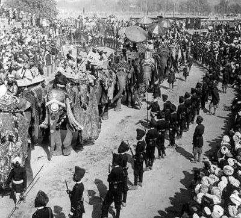
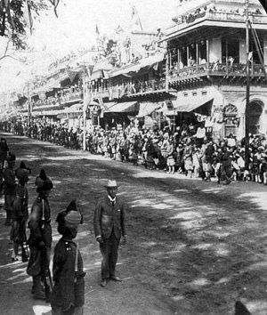
Chadni Chawk street
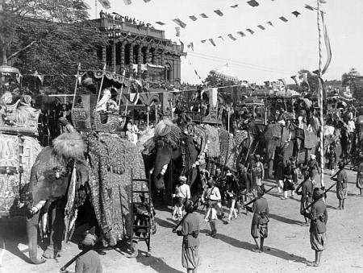
The Main Procession passing in front of the Town Hall: Orchha, Kotah, Datia and Karauli
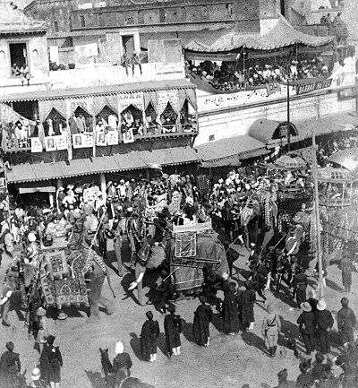
The Main Procession in Chadni Chawk
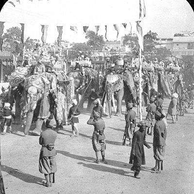
The Retainers Procession in front of the Town Hall
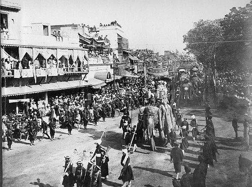
The official elephants at the end of Chadni Chawk
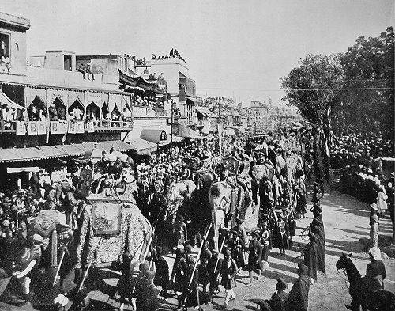
The Procession turning at the end of Chadni Chawk st.
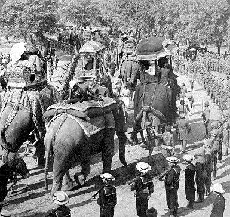
The elephants leaving the city
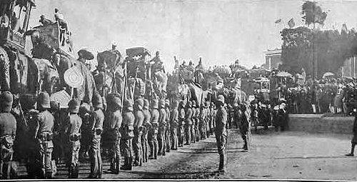
The Procession towards the city gates
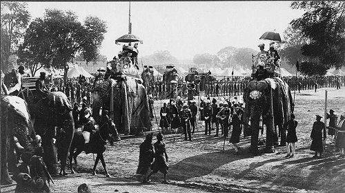
The Retainers at the saluting point,
leaving towards their camps
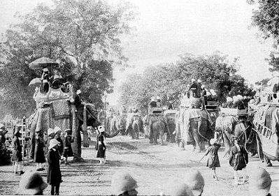
The official elephants outside the city,
at the saluting point